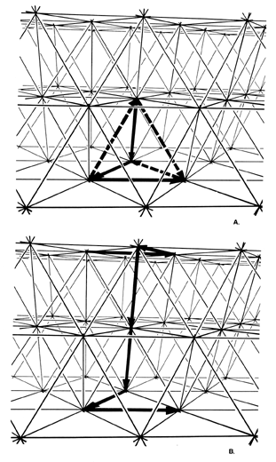

Fig. 537.10 Six Vectors for Every Point: With each high frequency of recurrent turns to play, there are six moves that can be made in 12 optimal directions.
Copyright © 1997 Estate of R. Buckminster Fuller